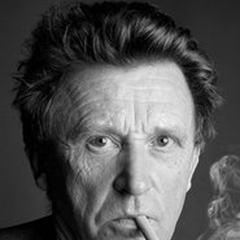
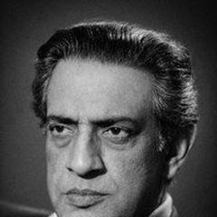
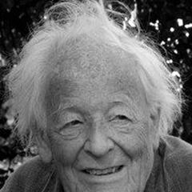
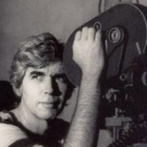
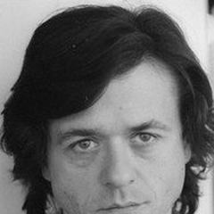
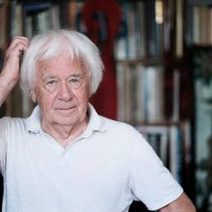

278 films
History
History films stage the past, from antiquity to the recent century. Griffith's Intolerance and Gance's Napoléon set the scale in the silent era; Hollywood's biblical and Roman epics of the 1950s–60s followed; European directors such as Visconti, Bertolucci and Angelopoulos used history to explore politics and memory. The strongest examples treat the past as a mirror for the present, not as costume.
- Where
- The United States, Italy, Britain, France, Russia, Greece
- When
- From the 1900s; epic peak 1950s–60s
- Key figures
- D.W. Griffith, Sergei Eisenstein, Luchino Visconti, Bernardo Bertolucci, Theo Angelopoulos, Akira Kurosawa
- Landmark films
- Battleship Potemkin (1925), The Leopard (1963), Andrei Rublev (1966), The Last Emperor (1987)
- Legacy
- Shaped popular memory of historical events and periods
What to look for
- Period design, costume and language
- Large crowds and spectacle
- Personal stories inside political change
- Historical fact versus dramatic licence
- The past reflecting the present
Directors with the most films in this genre
 Andrzej Wajda5 films
Andrzej Wajda5 films Claude Lanzmann4 films
Claude Lanzmann4 films Edgar Reitz4 films
Edgar Reitz4 films
Jean-Marie Straub4 films Sergei Eisenstein4 films
Sergei Eisenstein4 films Spike Lee4 films
Spike Lee4 films Steven Spielberg4 films
Steven Spielberg4 films Theo Angelopoulos4 films
Theo Angelopoulos4 films Abel Gance3 films
Abel Gance3 films Agnieszka Holland3 films
Agnieszka Holland3 films Alexander Sokurov3 films
Alexander Sokurov3 films Ava DuVernay3 films
Ava DuVernay3 films Chen Kaige3 films
Chen Kaige3 films Derek Jarman3 films
Derek Jarman3 films Eric Rohmer3 films
Eric Rohmer3 films Ermanno Olmi3 films
Ermanno Olmi3 films István Szabó3 films
István Szabó3 films Kathryn Bigelow3 films
Kathryn Bigelow3 films Kenji Mizoguchi3 films
Kenji Mizoguchi3 films Mario Monicelli3 films
Mario Monicelli3 films Miklós Jancsó3 films
Miklós Jancsó3 films Pier Paolo Pasolini3 films
Pier Paolo Pasolini3 films Rainer Werner Fassbinder3 films
Rainer Werner Fassbinder3 films Richard Attenborough3 films
Richard Attenborough3 filmsSee all 185 directors
 Roberto Rossellini3 films
Roberto Rossellini3 films Roland Joffé3 films
Roland Joffé3 films
Satyajit Ray3 films Steve McQueen3 films
Steve McQueen3 films Andrei Konchalovsky2 films
Andrei Konchalovsky2 films Bernardo Bertolucci2 films
Bernardo Bertolucci2 films Bertrand Tavernier2 films
Bertrand Tavernier2 films Bo Widerberg2 films
Bo Widerberg2 films Carl Theodor Dreyer2 films
Carl Theodor Dreyer2 films Christopher Nolan2 films
Christopher Nolan2 films Costa-Gavras2 films
Costa-Gavras2 films D.W. Griffith2 films
D.W. Griffith2 films Elia Kazan2 films
Elia Kazan2 films Ertem Eğilmez2 films
Ertem Eğilmez2 films Ettore Scola2 films
Ettore Scola2 films François Truffaut2 films
François Truffaut2 films
Hans-Jürgen Syberberg2 filmsHiroshi Inagaki2 films Hou Hsiao-hsien2 films
Hou Hsiao-hsien2 films Jan Troell2 films
Jan Troell2 films Jia Zhangke2 films
Jia Zhangke2 films John Ford2 films
John Ford2 films Josef von Sternberg2 films
Josef von Sternberg2 films Joseph L. Mankiewicz2 films
Joseph L. Mankiewicz2 films Luchino Visconti2 films
Luchino Visconti2 films Marco Bellocchio2 films
Marco Bellocchio2 films Margarethe von Trotta2 films
Margarethe von Trotta2 films Martin Scorsese2 films
Martin Scorsese2 films Michael Curtiz2 filmsNelson Pereira dos Santos2 films
Michael Curtiz2 filmsNelson Pereira dos Santos2 films Nikita Mikhalkov2 films
Nikita Mikhalkov2 films Oliver Stone2 films
Oliver Stone2 films Orson Welles2 films
Orson Welles2 films Pablo Larraín2 films
Pablo Larraín2 films Paul Greengrass2 films
Paul Greengrass2 films René Clément2 films
René Clément2 films Shyam Benegal2 films
Shyam Benegal2 films Sofia Coppola2 films
Sofia Coppola2 films Srdjan Dragojević2 films
Srdjan Dragojević2 films Terrence Malick2 films
Terrence Malick2 films Veljko Bulajić2 films
Veljko Bulajić2 films Wang Bing2 films
Wang Bing2 films Werner Herzog2 films
Werner Herzog2 films Yousry Nasrallah2 films
Yousry Nasrallah2 films Youssef Chahine2 films
Youssef Chahine2 films Zhang Yimou2 filmsAbdellatif Kechiche1 film
Zhang Yimou2 filmsAbdellatif Kechiche1 film Agnès Varda1 film
Agnès Varda1 film Akira Kurosawa1 film
Akira Kurosawa1 film Alain Resnais1 film
Alain Resnais1 film Alan J. Pakula1 film
Alan J. Pakula1 film Alberto Lattuada1 film
Alberto Lattuada1 film Aleksandar Petrović1 film
Aleksandar Petrović1 film Alexander Dovzhenko1 film
Alexander Dovzhenko1 film Alexander Kluge1 film
Alexander Kluge1 film Alf Sjöberg1 film
Alf Sjöberg1 film Ali Abbasi1 filmAmanda Kernell1 film
Ali Abbasi1 filmAmanda Kernell1 film Amos Gitai1 film
Amos Gitai1 film Andrei Tarkovsky1 filmAng Lee1 film
Andrei Tarkovsky1 filmAng Lee1 film Athina Rachel Tsangari1 film
Athina Rachel Tsangari1 film Atıf Yılmaz1 film
Atıf Yılmaz1 film Bahram Beyzaie1 film
Bahram Beyzaie1 film Ben Affleck1 film
Ben Affleck1 film Bille August1 film
Bille August1 film Cecil B. DeMille1 film
Cecil B. DeMille1 film Chloé Zhao1 film
Chloé Zhao1 film Chris Marker1 filmChristian Petzold1 film
Chris Marker1 filmChristian Petzold1 film Claude Chabrol1 filmClaude Lelouch1 film
Claude Chabrol1 filmClaude Lelouch1 film Corneliu Porumboiu1 filmCristi Puiu1 filmDamien Chazelle1 film
Corneliu Porumboiu1 filmCristi Puiu1 filmDamien Chazelle1 film David Lean1 film
David Lean1 film Derviş Zaim1 film
Derviş Zaim1 film Edward Berger1 film
Edward Berger1 film Elem Klimov1 filmElia Suleiman1 film
Elem Klimov1 filmElia Suleiman1 film Fatih Akin1 film
Fatih Akin1 film Federico Fellini1 film
Federico Fellini1 film Fernando Pérez1 film
Fernando Pérez1 film Fernando Solanas1 film
Fernando Solanas1 film Ferzan Özpetek1 film
Ferzan Özpetek1 film Francesco Rosi1 film
Francesco Rosi1 film Fred Zinnemann1 film
Fred Zinnemann1 film G.W. Pabst1 film
G.W. Pabst1 film Goran Marković1 film
Goran Marković1 film Gus Van Sant1 film
Gus Van Sant1 film Haile Gerima1 film
Haile Gerima1 film Henri-Georges Clouzot1 film
Henri-Georges Clouzot1 film Hiroshi Teshigahara1 film
Hiroshi Teshigahara1 film Howard Hawks1 film
Howard Hawks1 film
Humberto Solás1 filmIldikó Enyedi1 filmJacques Demy1 film Jacques Rivette1 film
Jacques Rivette1 film James Whale1 film
James Whale1 film Jasmila Žbanić1 filmJean Cocteau1 film
Jasmila Žbanić1 filmJean Cocteau1 film Jean Renoir1 film
Jean Renoir1 film Joaquim Pedro de Andrade1 film
Joaquim Pedro de Andrade1 film Jorge Sanjinés1 film
Jorge Sanjinés1 film Julien Duvivier1 film
Julien Duvivier1 film Ken Loach1 filmKenneth Branagh1 film
Ken Loach1 filmKenneth Branagh1 film King Vidor1 film
King Vidor1 film Kira Muratova1 film
Kira Muratova1 film Kleber Mendonça Filho1 filmKujtim Çashku1 film
Kleber Mendonça Filho1 filmKujtim Çashku1 film Laura Poitras1 film
Laura Poitras1 film Leopoldo Torre Nilsson1 film
Leopoldo Torre Nilsson1 film Lordan Zafranović1 filmLucrecia Martel1 film
Lordan Zafranović1 filmLucrecia Martel1 film Mani Kaul1 filmMario Camus1 film
Mani Kaul1 filmMario Camus1 film Masahiro Shinoda1 film
Masahiro Shinoda1 film Masaki Kobayashi1 film
Masaki Kobayashi1 film Mauritz Stiller1 film
Mauritz Stiller1 film May el-Toukhy1 film
May el-Toukhy1 film Med Hondo1 film
Med Hondo1 film Mike Leigh1 film
Mike Leigh1 film Mike Nichols1 film
Mike Nichols1 film Mikhail Kalatozov1 film
Mikhail Kalatozov1 film Miloš Forman1 film
Miloš Forman1 film Mira Nair1 film
Mira Nair1 film Mohammed Lakhdar-Hamina1 film
Mohammed Lakhdar-Hamina1 film Márta Mészáros1 film
Márta Mészáros1 film Neil Jordan1 film
Neil Jordan1 film Pantelis Voulgaris1 film
Pantelis Voulgaris1 film
Patrice Chéreau1 film Patricio Guzmán1 film
Patricio Guzmán1 film Peter Greenaway1 film
Peter Greenaway1 film Peter Weir1 film
Peter Weir1 film Radu Jude1 film
Radu Jude1 film Radu Mihăileanu1 film
Radu Mihăileanu1 film
Rainer Simon1 film Raúl Ruiz1 filmReinhard Hauff1 film
Raúl Ruiz1 filmReinhard Hauff1 film Richard Pearce1 film
Richard Pearce1 film Robert Bresson1 film
Robert Bresson1 film Roman Polanski1 film
Roman Polanski1 film Sergei Parajanov1 film
Sergei Parajanov1 film Sergio Leone1 film
Sergio Leone1 film Shohei Imamura1 film
Shohei Imamura1 film Sinan Çetin1 film
Sinan Çetin1 film Teinosuke Kinugasa1 film
Teinosuke Kinugasa1 film Terence Davies1 film
Terence Davies1 film Todd Haynes1 filmTomás Gutiérrez Alea1 film
Todd Haynes1 filmTomás Gutiérrez Alea1 film Trần Anh Hùng1 film
Trần Anh Hùng1 film Valerio Zurlini1 film
Valerio Zurlini1 film Victor Fleming1 film
Victor Fleming1 film Vishal Bhardwaj1 film
Vishal Bhardwaj1 film Vittorio De Sica1 film
Vittorio De Sica1 film Volker Schlöndorff1 film
Volker Schlöndorff1 film Walter Salles1 film
Walter Salles1 film Wim Wenders1 film
Wim Wenders1 film Wojciech Has1 film
Wojciech Has1 filmOften combined with
278 films, best rated first
- Schindler's List 1993 · Steven Spielberg · IMDb 9.0
- Shoah 1985 · Claude Lanzmann · IMDb 8.7
- Night and Fog 1956 · Alain Resnais · IMDb 8.6
- Pretty Village, Pretty Flame 1996 · Srdjan Dragojević · IMDb 8.6
- Heimat: A Chronicle of Germany 1984 · Edgar Reitz · IMDb 8.5
- The Salt of the Earth 2014 · Wim Wenders · IMDb 8.4
- Death of Yazdgerd 1982 · Bahram Beyzaie · IMDb 8.3
- The Battle of Chile 1979 · Patricio Guzmán · IMDb 8.3
- 13th 2016 · Ava DuVernay · IMDb 8.2
- Napoléon 1927 · Abel Gance · IMDb 8.2
- Oppenheimer 2023 · Christopher Nolan · IMDb 8.2
- 12 Years a Slave 2013 · Steve McQueen · IMDb 8.1
- I'm Still Here 2024 · Walter Salles · IMDb 8.1
- The Passion of Joan of Arc 1928 · Carl Theodor Dreyer · IMDb 8.1
- Variola Vera 1982 · Goran Marković · IMDb 8.1
- Andrei Rublev 1966 · Andrei Tarkovsky · IMDb 8.0
- Day of Wrath 1943 · Carl Theodor Dreyer · IMDb 8.0
- Dead Souls 2018 · Wang Bing · IMDb 8.0
- Gandhi 1982 · Richard Attenborough · IMDb 8.0
- JFK 1991 · Oliver Stone · IMDb 8.0
- Quo Vadis, Aida? 2020 · Jasmila Žbanić · IMDb 8.0
- The Emigrants 1971 · Jan Troell · IMDb 8.0
- The Organizer 1963 · Mario Monicelli · IMDb 8.0
- All the President's Men 1976 · Alan J. Pakula · IMDb 7.9
- Battleship Potemkin 1925 · Sergei Eisenstein · IMDb 7.9
- Kagemusha 1980 · Akira Kurosawa · IMDb 7.9
- Siberiade 1979 · Andrei Konchalovsky · IMDb 7.9
- The Leopard 1963 · Luchino Visconti · IMDb 7.9
- 4 Little Girls 1997 · Spike Lee · IMDb 7.8
- All Quiet on the Western Front 2022 · Edward Berger · IMDb 7.8
- Dunkirk 2017 · Christopher Nolan · IMDb 7.8
- Hamnet 2025 · Chloé Zhao · IMDb 7.8
- The Killing Fields 1984 · Roland Joffé · IMDb 7.8
- The Last Bolshevik 1993 · Chris Marker · IMDb 7.8
- The Travelling Players 1975 · Theo Angelopoulos · IMDb 7.8
- The Tree of Wooden Clogs 1978 · Ermanno Olmi · IMDb 7.8
- A City of Sadness 1989 · Hou Hsiao-hsien · IMDb 7.7
- A Man for All Seasons 1966 · Fred Zinnemann · IMDb 7.7
- Argo 2012 · Ben Affleck · IMDb 7.7
- Captain Blood 1935 · Michael Curtiz · IMDb 7.7
- Il marchese del Grillo 1981 · Mario Monicelli · IMDb 7.7
- L'armata Brancaleone 1966 · Mario Monicelli · IMDb 7.7
- Malcolm X 1992 · Spike Lee · IMDb 7.7
- Missing 1982 · Costa-Gavras · IMDb 7.7
- Sergeant York 1941 · Howard Hawks · IMDb 7.7
- Stone Years 1985 · Pantelis Voulgaris · IMDb 7.7
- The Last Emperor 1987 · Bernardo Bertolucci · IMDb 7.7
- 1900 1976 · Bernardo Bertolucci · IMDb 7.6
- Bloody Sunday 2002 · Paul Greengrass · IMDb 7.6
- Bridge of Spies 2015 · Steven Spielberg · IMDb 7.6
- Chimes at Midnight 1965 · Orson Welles · IMDb 7.6
- Dark Waters 2019 · Todd Haynes · IMDb 7.6
- Intolerance 1916 · D.W. Griffith · IMDb 7.6
- Ivan the Terrible, Part I 1944 · Sergei Eisenstein · IMDb 7.6
- Le Bal 1983 · Ettore Scola · IMDb 7.6
- Pictures of Ghosts 2023 · Kleber Mendonça Filho · IMDb 7.6
- Special Section 1975 · Costa-Gavras · IMDb 7.6
- The Barber of Siberia 1998 · Nikita Mikhalkov · IMDb 7.6
- The Enigma of Kaspar Hauser 1974 · Werner Herzog · IMDb 7.6
- The Gospel According to St. Matthew 1964 · Pier Paolo Pasolini · IMDb 7.6
- The Hour of the Furnaces 1968 · Fernando Solanas · IMDb 7.6
- The Sea Hawk 1940 · Michael Curtiz · IMDb 7.6
- The Thin Red Line 1998 · Terrence Malick · IMDb 7.6
- United 93 2006 · Paul Greengrass · IMDb 7.6
- All the Beauty and the Bloodshed 2022 · Laura Poitras · IMDb 7.5
- Chushingura 1962 · Hiroshi Inagaki · IMDb 7.5
- Europa Europa 1990 · Agnieszka Holland · IMDb 7.5
- Killers of the Flower Moon 2023 · Martin Scorsese · IMDb 7.5
- Ludwig 1973 · Luchino Visconti · IMDb 7.5
- Lust, Caution 2007 · Ang Lee · IMDb 7.5
- Milk 2008 · Gus Van Sant · IMDb 7.5
- Munich 2005 · Steven Spielberg · IMDb 7.5
- Selma 2014 · Ava DuVernay · IMDb 7.5
- Story of Women 1988 · Claude Chabrol · IMDb 7.5
- The Color of Pomegranates 1969 · Sergei Parajanov · IMDb 7.5
- The Desert of the Tartars 1976 · Valerio Zurlini · IMDb 7.5
- The Last Supper 1976 · Tomás Gutiérrez Alea · IMDb 7.5
- The Mystery of Picasso 1956 · Henri-Georges Clouzot · IMDb 7.5
- The Round-Up 1965 · Miklós Jancsó · IMDb 7.5
- The Scarlet Empress 1934 · Josef von Sternberg · IMDb 7.5
- Wild River 1960 · Elia Kazan · IMDb 7.5
- A Bridge Too Far 1977 · Richard Attenborough · IMDb 7.4
- Alexander the Great 1980 · Theo Angelopoulos · IMDb 7.4
- Cave of Forgotten Dreams 2010 · Werner Herzog · IMDb 7.4
- Colonel Redl 1985 · István Szabó · IMDb 7.4
- Cry Freedom 1987 · Richard Attenborough · IMDb 7.4
- Danton 1983 · Andrzej Wajda · IMDb 7.4
- Everlasting Moments 2008 · Jan Troell · IMDb 7.4
- Gallipoli 1981 · Peter Weir · IMDb 7.4
- Henry V 1989 · Kenneth Branagh · IMDb 7.4
- Les Misérables (1995) 1995 · Claude Lelouch · IMDb 7.4
- Macbeth 1948 · Orson Welles · IMDb 7.4
- No 2012 · Pablo Larraín · IMDb 7.4
- One Sings, the Other Doesn't 1977 · Agnès Varda · IMDb 7.4
- Platform 2000 · Jia Zhangke · IMDb 7.4
- Queen Margot 1994 · Patrice Chéreau · IMDb 7.4
- Sunshine 1999 · István Szabó · IMDb 7.4
- The Mission (1986) 1986 · Roland Joffé · IMDb 7.4
- The Taste of Things 2023 · Trần Anh Hùng · IMDb 7.4
- The Trial of Joan of Arc 1962 · Robert Bresson · IMDb 7.4
- The Wild Child 1970 · François Truffaut · IMDb 7.4 · Biography, Drama, History
- Zero Dark Thirty 2012 · Kathryn Bigelow · IMDb 7.4 · Drama, History, Thriller
- A Passage to India 1984 · David Lean · IMDb 7.3 · Adventure, Drama, History
- Chronicle of the Years of Fire 1975 · Mohammed Lakhdar-Hamina · IMDb 7.3 · Drama, History
- Colonel Bunker 1996 · Kujtim Çashku · IMDb 7.3 · Drama, History
- Coming Home (2014) 2014 · Zhang Yimou · IMDb 7.3 · Drama, History, Romance
- Dear Comrades! 2020 · Andrei Konchalovsky · IMDb 7.3 · Drama, History
- Detroit 2017 · Kathryn Bigelow · IMDb 7.3 · Crime, Drama, History
- First Man 2018 · Damien Chazelle · IMDb 7.3 · Biography, Drama, History
- José Martí: el ojo del canario 2010 · Fernando Pérez · IMDb 7.3 · Drama, History
- Lincoln 2012 · Steven Spielberg · IMDb 7.3 · Biography, Drama, History
- Man of Iron 1981 · Andrzej Wajda · IMDb 7.3 · Drama, History
- Orphans of the Storm 1921 · D.W. Griffith · IMDb 7.3 · Drama, History, Romance
- Parade 2011 · Srdjan Dragojević · IMDb 7.3 · Comedy, Drama, History
- Phoenix 2014 · Christian Petzold · IMDb 7.3 · Drama, History, Musical
- Red Sorghum 1987 · Zhang Yimou · IMDb 7.3 · Drama, History, Romance
- Salvatore Giuliano 1962 · Francesco Rosi · IMDb 7.3 · Crime, Drama, History
- The Last of the Unjust 2013 · Claude Lanzmann · IMDb 7.3 · Documentary, History
- The Long Walk Home 1990 · Richard Pearce · IMDb 7.3 · Drama, History
- The Sun 2005 · Alexander Sokurov · IMDb 7.3 · Drama, History
- An Officer and a Spy 2019 · Roman Polanski · IMDb 7.2 · Drama, History, Thriller
- Dr. Akagi 1998 · Shohei Imamura · IMDb 7.2 · Comedy, Drama, History
- El coraje del pueblo 1971 · Jorge Sanjinés · IMDb 7.2 · Drama, History
- Joe Hill 1971 · Bo Widerberg · IMDb 7.2 · Biography, Drama, History
- Julius Caesar 1953 · Joseph L. Mankiewicz · IMDb 7.2 · Drama, History
- Ludwig: Requiem for a Virgin King 1972 · Hans-Jürgen Syberberg · IMDb 7.2 · Biography, Drama, History
- Origin 2023 · Ava DuVernay · IMDb 7.2 · Drama, History
- Russian Ark 2002 · Alexander Sokurov · IMDb 7.2 · Drama, Fantasy, History
- Sami Blood 2016 · Amanda Kernell · IMDb 7.2 · Drama, History
- That Night in Varennes 1982 · Ettore Scola · IMDb 7.2 · Drama, History
- The 47 Ronin 1941 · Kenji Mizoguchi · IMDb 7.2 · Drama, History
- The Emperor and the Assassin 1998 · Chen Kaige · IMDb 7.2 · Drama, History, Romance
- The Garden of the Finzi-Continis 1970 · Vittorio De Sica · IMDb 7.2 · Drama, History, War
- The Iron Horse 1924 · John Ford · IMDb 7.2 · Drama, History, Romance
- The Last Ten Days 1955 · G.W. Pabst · IMDb 7.2 · Drama, History, War
- The Story of Adele H. 1975 · François Truffaut · IMDb 7.2 · Biography, Drama, History
- Viva Zapata! 1952 · Elia Kazan · IMDb 7.2 · Biography, Drama, History
- Destiny (1997) 1997 · Youssef Chahine · IMDb 7.1 · Comedy, Drama, History
- Diplomacy 2014 · Volker Schlöndorff · IMDb 7.1 · Drama, History, War
- Gate of Hell 1953 · Teinosuke Kinugasa · IMDb 7.1 · Drama, History
- Goodbye Bafana 2007 · Bille August · IMDb 7.1 · Biography, Drama, History
- Michael Collins 1996 · Neil Jordan · IMDb 7.1 · Biography, Drama, History
- Princess Yang Kwei Fei 1955 · Kenji Mizoguchi · IMDb 7.1 · Drama, History, Romance
- Rikyu 1989 · Hiroshi Teshigahara · IMDb 7.1 · Biography, Drama, History
- Silence (1971) 1971 · Masahiro Shinoda · IMDb 7.1 · Drama, History
- Silkwood 1983 · Mike Nichols · IMDb 7.1 · Biography, Drama, History
- Sir Arne's Treasure 1919 · Mauritz Stiller · IMDb 7.1 · Drama, History
- Socrates 1971 · Roberto Rossellini · IMDb 7.1 · Biography, History
- The Apprentice 2024 · Ali Abbasi · IMDb 7.1 · Biography, Drama, History
- The Time That Remains 2009 · Elia Suleiman · IMDb 7.1 · Drama, History
- Yellow Earth 1984 · Chen Kaige · IMDb 7.1 · Drama, History, Musical
- Afterimage 2016 · Andrzej Wajda · IMDb 7.0 · Biography, Drama, History
- Anatahan 1953 · Josef von Sternberg · IMDb 7.0 · Drama, History, War
- Battle of the Rails 1946 · René Clément · IMDb 7.0 · Drama, History, War
- Cleopatra 1963 · Joseph L. Mankiewicz · IMDb 7.0 · Biography, Drama, History
- Il mulino del Po 1949 · Alberto Lattuada · IMDb 7.0 · Drama, History
- Katyn 2007 · Andrzej Wajda · IMDb 7.0 · Drama, History, War
- Kidnapped 2023 · Marco Bellocchio · IMDb 7.0 · Drama, History
- Kundun 1997 · Martin Scorsese · IMDb 7.0 · Biography, Drama, History
- Nixon 1995 · Oliver Stone · IMDb 7.0 · Biography, Drama, History
- Northwest Passage 1940 · King Vidor · IMDb 7.0 · Adventure, Drama, History
- Sarraounia 1986 · Med Hondo · IMDb 7.0 · Drama, History, War
- Taking Sides 2001 · István Szabó · IMDb 7.0 · Drama, History, Musical
- The Battle of Neretva 1969 · Veljko Bulajić · IMDb 7.0 · Drama, History, War
- The Decameron 1971 · Pier Paolo Pasolini · IMDb 7.0 · Comedy, Drama, History
- The Golden Coach 1952 · Jean Renoir · IMDb 7.0 · Comedy, Drama, History
- The Man in the Iron Mask 1939 · James Whale · IMDb 7.0 · Adventure, History, Romance
- The Marquise of O 1976 · Eric Rohmer · IMDb 7.0 · Drama, History
- Trahir 1993 · Radu Mihăileanu · IMDb 7.0 · Drama, History
- Ådalen 31 1969 · Bo Widerberg · IMDb 7.0 · Drama, History, Romance
- Despair 1978 · Rainer Werner Fassbinder · IMDb 6.9 · Drama, History
- Effi Briest 1974 · Rainer Werner Fassbinder · IMDb 6.9 · Drama, History
- Get on the Bus 1996 · Spike Lee · IMDb 6.9 · Adventure, Drama, History
- Goya's Ghosts 2006 · Miloš Forman · IMDb 6.9 · Biography, Drama, History
- Greenery Will Bloom Again 2014 · Ermanno Olmi · IMDb 6.9 · Drama, History, War
- I Wish I Knew 2010 · Jia Zhangke · IMDb 6.9 · Documentary, History
- Karl May 1974 · Hans-Jürgen Syberberg · IMDb 6.9 · Biography, Drama, History
- Perceval le Gallois 1978 · Eric Rohmer · IMDb 6.9 · History, Adventure, Fantasy
- Rosa Luxemburg 1986 · Margarethe von Trotta · IMDb 6.9 · Biography, Drama, History
- Safe Conduct 2002 · Bertrand Tavernier · IMDb 6.9 · Biography, Drama, History
- The Profession of Arms 2001 · Ermanno Olmi · IMDb 6.9 · Drama, History, War
- The Woman and the Stranger 1985 · Rainer Simon · IMDb 6.9 · Drama, History
- Time Regained 1999 · Raúl Ruiz · IMDb 6.9 · Drama, History
- Among Grey Stones 1983 · Kira Muratova · IMDb 6.8 · Drama, History
- Black Venus 2010 · Abdellatif Kechiche · IMDb 6.8 · Drama, History
- Charlatan 2020 · Agnieszka Holland · IMDb 6.8 · Biography, Drama, History
- Days of '36 1972 · Theo Angelopoulos · IMDb 6.8 · Drama, History
- Is Paris Burning? 1966 · René Clément · IMDb 6.8 · Drama, History, War
- Mr. Turner 2014 · Mike Leigh · IMDb 6.8 · Biography, Drama, History
- Taboo 1999 · Nagisa Oshima · IMDb 6.8 · Drama, History, Thriller
- The Chronicle of Anna Magdalena Bach 1968 · Jean-Marie Straub · IMDb 6.8 · Biography, Drama, History
- The Lady and the Duke 2001 · Eric Rohmer · IMDb 6.8 · Drama, History, Romance
- The Ten Commandments (1923) 1923 · Cecil B. DeMille · IMDb 6.8 · Biography, Drama, History
- Woman Unknown 2026 · May el-Toukhy · IMDb 6.8 · Biography, Drama, History
- Cheyenne Autumn 1964 · John Ford · IMDb 6.7 · Drama, History, Western
- Edward II 1991 · Derek Jarman · IMDb 6.7 · Drama, History, Romance
- Jimmy's Hall 2014 · Ken Loach · IMDb 6.7 · Biography, Drama, History
- K-19: The Widowmaker 2002 · Kathryn Bigelow · IMDb 6.7 · Drama, History, Thriller
- The Fall of Italy 1981 · Lordan Zafranović · IMDb 6.7 · Drama, History, Romance
- The New World 2005 · Terrence Malick · IMDb 6.7 · Biography, Drama, History
- Zama 2017 · Lucrecia Martel · IMDb 6.7 · Drama, History
- Benediction 2021 · Terence Davies · IMDb 6.6 · Biography, Drama, History
- Cantata de Chile 1975 · Humberto Solás · IMDb 6.6 · Drama, History
- Francofonia 2015 · Alexander Sokurov · IMDb 6.6 · Drama, History
- Golgotha 1935 · Julien Duvivier · IMDb 6.6 · Adventure, Drama, History
- History Lessons 1973 · Jean-Marie Straub · IMDb 6.6 · Drama, History
- Hungarian Rhapsody 1979 · Miklós Jancsó · IMDb 6.6 · Drama, History
- Occupied City 2023 · Steve McQueen · IMDb 6.6 · Documentary, History, War
- Uppercase Print 2020 · Radu Jude · IMDb 6.6 · Documentary, Drama, History
- Caravaggio 1986 · Derek Jarman · IMDb 6.5 · Biography, Drama, History
- Fat Man and Little Boy 1989 · Roland Joffé · IMDb 6.5 · Biography, Drama, History
- Malmkrog 2020 · Cristi Puiu · IMDb 6.5 · Drama, History
- Marie Antoinette 2006 · Sofia Coppola · IMDb 6.5 · Biography, Drama, History
- Nightwatching 2007 · Peter Greenaway · IMDb 6.5 · Biography, Drama, History
- The Princess of Montpensier 2010 · Bertrand Tavernier · IMDb 6.5 · Action, Drama, History
- Vision 2009 · Margarethe von Trotta · IMDb 6.5 · Biography, Drama, History
- Joan of Arc 1948 · Victor Fleming · IMDb 6.4 · Biography, Drama, History
- The Confrontation 1969 · Miklós Jancsó · IMDb 6.4 · Drama, History, Musical
- Barabbas 1953 · Alf Sjöberg · IMDb 6.3 · Biography, Drama, History
- El Conde 2023 · Pablo Larraín · IMDb 6.3 · Comedy, Fantasy, History
- Not Reconciled 1965 · Jean-Marie Straub · IMDb 6.3 · Drama, History
- The Assassin 2015 · Hou Hsiao-hsien · IMDb 6.3 · Action, Drama, History
- The Beguiled 2017 · Sofia Coppola · IMDb 6.3 · Drama, History, Thriller
- The Canterbury Tales 1972 · Pier Paolo Pasolini · IMDb 6.3 · Comedy, Drama, History
- The Cut 2014 · Fatih Akin · IMDb 6.3 · Adventure, Drama, History
- Austerlitz 1960 · Abel Gance · IMDb 6.2 · Drama, History, War
- Blitz 2024 · Steve McQueen · IMDb 6.2 · Action, Drama, History
- Martín Fierro 1968 · Leopoldo Torre Nilsson · IMDb 6.2 · Drama, History
- Sacrifice 2010 · Chen Kaige · IMDb 6.2 · Action, Drama, History
- Sebastiane 1976 · Derek Jarman · IMDb 6.2 · Drama, History, Romance
- The Second Game 2014 · Corneliu Porumboiu · IMDb 6.2 · Documentary, History
- The Story of My Wife 2021 · Ildikó Enyedi · IMDb 6.2 · Drama, History, Romance
- Pan Tadeusz 1999 · Andrzej Wajda · IMDb 6.1 · Drama, History, Romance
- The Brazilwood Man 1982 · Joaquim Pedro de Andrade · IMDb 6.1 · Biography, Drama, History
- The Day That Shook the World 1975 · Veljko Bulajić · IMDb 6.1 · Drama, History
- Lucrezia Borgia 1935 · Abel Gance · IMDb 6.0 · Drama, History, Romance
- Harvest 2024 · Athina Rachel Tsangari · IMDb 5.9 · Drama, History
- Sunstroke 2014 · Nikita Mikhalkov · IMDb 5.8 · Drama, History, Romance
- The Colossus of Rhodes 1961 · Sergio Leone · IMDb 5.8 · Adventure, Drama, History
- After the Battle 2012 · Yousry Nasrallah · IMDb 5.7 · Drama, History
- Group Portrait with a Lady 1977 · Aleksandar Petrović · IMDb 5.7 · Drama, History, Romance
- Lady Oscar 1979 · Jacques Demy · IMDb 5.7 · Drama, History, Romance
- Adieu Bonaparte 1985 · Youssef Chahine · Drama, History
- Adwa: An African Victory 1999 · Haile Gerima · Documentary, History, War
- Agony 1975 · Elem Klimov · Drama, History, Biography
- Berlin Alexanderplatz 1980 · Rainer Werner Fassbinder · Drama, History
- Burning Bush 2013 · Agnieszka Holland · Biography, History, Drama
- Casanova 1976 · Federico Fellini · Biography, Drama, History
- Diary for My Loves 1987 · Márta Mészáros · Drama, History
- Exterior Night 2022 · Marco Bellocchio · History, Drama
- Heimat 3 2004 · Edgar Reitz · Drama, History
- Home from Home 2013 · Edgar Reitz · Drama, History
- Ivan the Terrible, Part II 1958 · Sergei Eisenstein · History, Drama, Biography
- Joan the Maid 1994 · Jacques Rivette · History, Biography, Drama
- Memories of Prison 1984 · Nelson Pereira dos Santos · Biography, Drama, History
- October 1928 · Sergei Eisenstein · History, Drama
- Othon 1970 · Jean-Marie Straub · Drama, History
- Sobibor, 14 October 1943, 4 p.m. 2001 · Claude Lanzmann · Documentary, History, War
- Stammheim 1986 · Reinhard Hauff · Drama, History
- Tent of Miracles 1977 · Nelson Pereira dos Santos · Drama, History
- The Beehive 1982 · Mario Camus · Drama, History
- The Crucified Lovers 1954 · Kenji Mizoguchi · Drama, Romance, History
- The Doll 1968 · Wojciech Has · Drama, Romance, History
- The Eagle Has Two Heads 1948 · Jean Cocteau · Drama, Romance, History
- The Flowers of Saint Francis 1950 · Roberto Rossellini · Drama, Biography, History
- The Gate of the Sun 2004 · Yousry Nasrallah · Drama, History, Romance
- The Human Condition 1959 · Masaki Kobayashi · War, Drama, History
- The Last Day of Yitzhak Rabin 2015 · Amos Gitai · Drama, History, Biography
- The Patriot 1979 · Alexander Kluge · Drama, History
- The Rise of Louis XIV 1966 · Roberto Rossellini · Biography, History, Drama
- The Second Heimat 1992 · Edgar Reitz · Drama, History
- The Weeping Meadow 2004 · Theo Angelopoulos · Drama, Romance, History
- Valery Chkalov 1941 · Mikhail Kalatozov · Biography, Drama, History
- West of the Tracks 2003 · Wang Bing · Documentary, History
- When the Levees Broke 2006 · Spike Lee · Documentary, History
- Whirlwind 1964 · Hiroshi Inagaki · Action, Adventure, History
- Why Israel 1973 · Claude Lanzmann · Documentary, History
- Zvenyhora 1928 · Alexander Dovzhenko · Drama, Fantasy, History